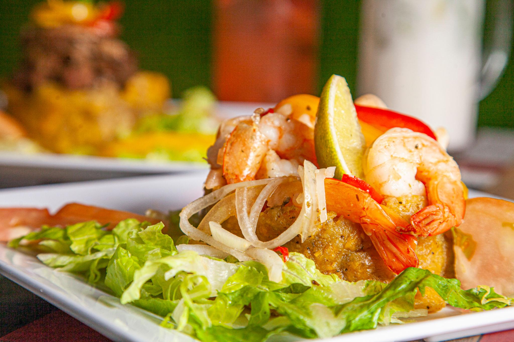
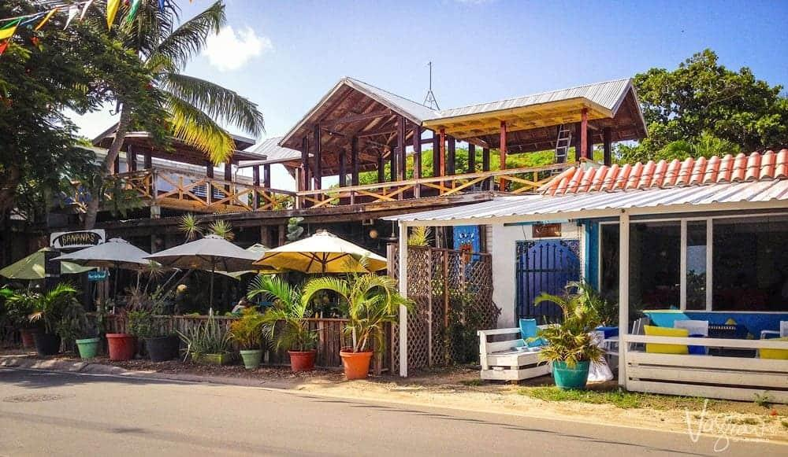
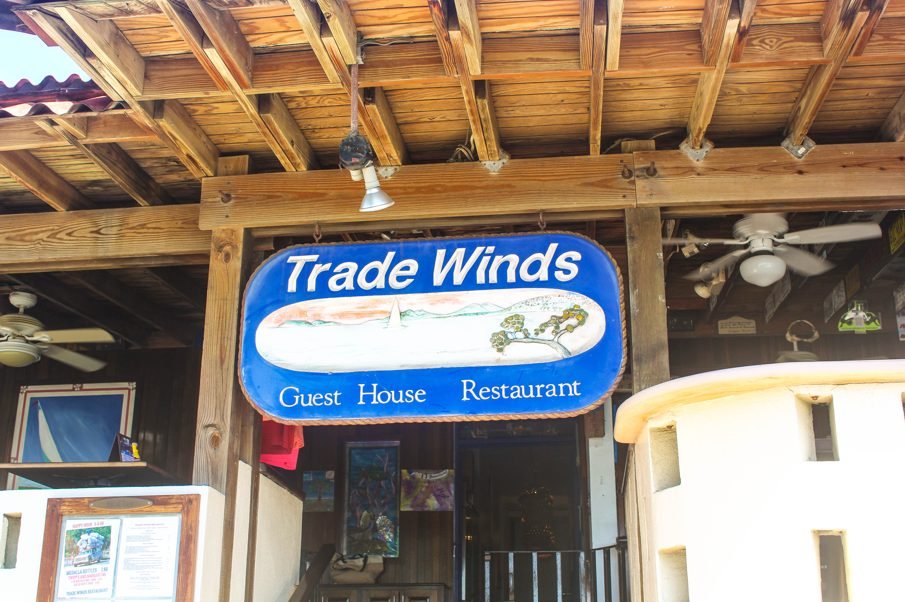

Gastronomía
Vieques ofrece una experiencia gastronómica única con sabores caribeños, mariscos frescos y comida típica puertorriqueña.
Desde restaurantes frente al mar hasta pequeños negocios locales, Vieques combina tradición y sabor. ¡Buen provecho!

Restaurantes Destacados

Bananas Restaurant
Restaurante popular en Vieques con platos caribeños, mariscos frescos y ambiente relajado.
Ver más
Trade Winds Restaurant
Ubicado en Esperanza, ofrece comida criolla y mariscos con una hermosa vista al mar.
Ver más